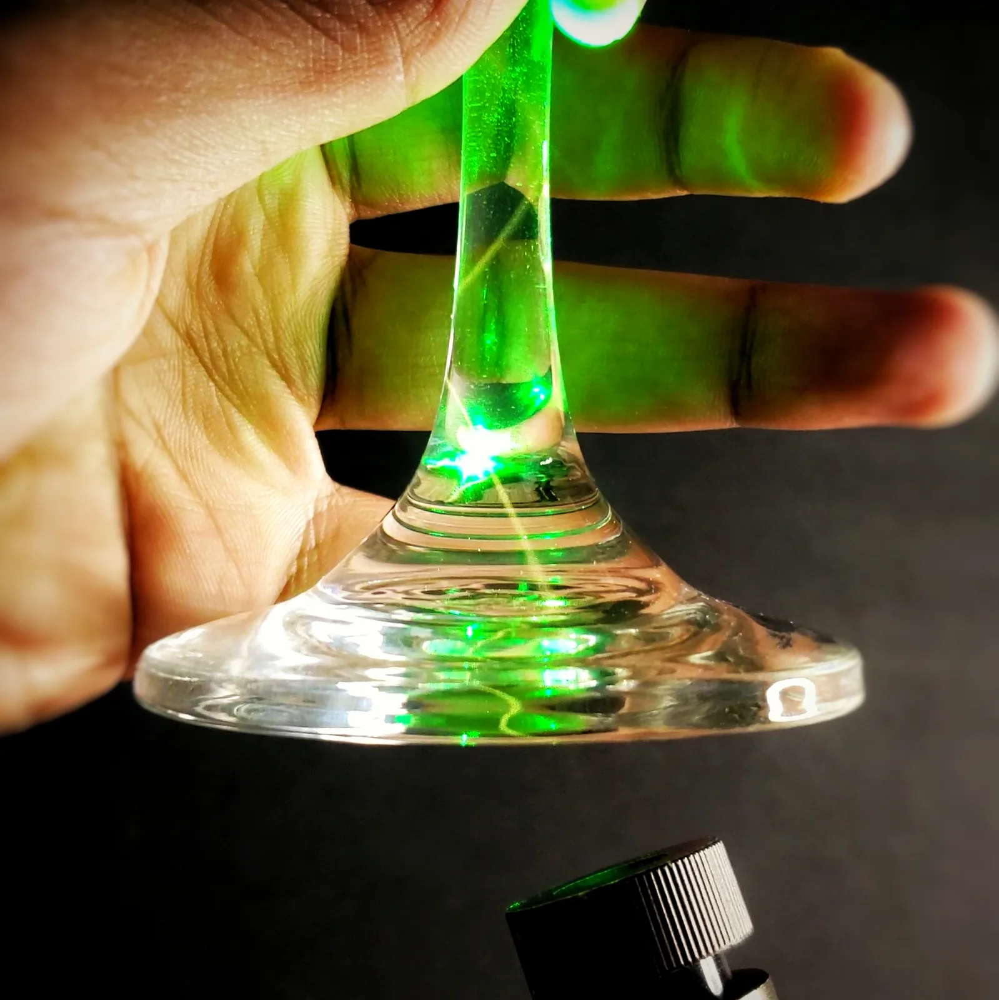
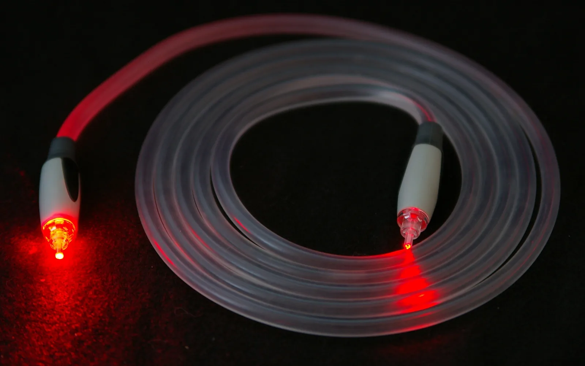

Kokonaisheijastuminen ja valokuitu
Miksi valo kulkee lasikuidussa Itämeren pohjaa pitkin Helsingistä Saksaan pääsemättä välillä ulos, vaikka lasi on läpinäkyvää?
Pohjatiedot
- Valo taittuu rajapinnassa taittumislain $n_1 \sin\alpha_1 = n_2 \sin\alpha_2$ mukaan. Kulmat mitataan normaalistaluku Valon heijastuminen ja taittuminen
- Aineessa valo etenee nopeudella $v = c : n$luku Valon heijastuminen ja taittuminen
Ydinpolku: tee vaiheet järjestyksessä. Ydinpolulla ei vain lasketa. Siinä myös tutkitaan, selitetään ja piirretään kuvaajia. Valinnainen-tehtävät ovat lisäharjoittelua. Valinnaisia tehtäviä on 4.
Luvun tärkeät käsitteet Vapaaehtoinen
Tutustu luvun tärkeisiin käsitteisiin. Voit kirjoittaa niiden merkitykset sinulle vahvimmalla kielellä tai useammalla kielellä.
- Taitekerroin
- Luku $n = c : v$, joka kertoo, kuinka monta kertaa hitaammin valo etenee aineessa kuin tyhjiössä. Valokuidun ytimessä taitekerroin on vähän suurempi kuin kuoressa.
- Rajakulma
- Tulokulma, jolla taitekulma on $90^\circ$. Se on olemassa vain, kun $n_1 > n_2$, ja se saadaan yhtälöstä $\sin\alpha_\text{r} = n_2 : n_1$.
- Kokonaisheijastuminen
- Kaikki valo heijastuu rajapinnasta takaisin. Näin käy, kun valo tulee aineesta, jonka taitekerroin on suurempi, aineeseen, jonka taitekerroin on pienempi, ja tulokulma on rajakulmaa suurempi.
- Valokuitu
- Ohut lasikuitu, jossa ytimen taitekerroin on vähän suurempi kuin kuoren. Valo etenee ytimessä kokonaisheijastuen ja kuljettaa tietoa valopulsseina.
Pohdinta
Itämeren pohjassa kulkee merikaapeli C-Lion1 Helsingistä Saksan Rostockiin. Kaapelin pituus on $1172\,\text{km}$ (Cinia, 2016). Kaapelin sisällä tieto kulkee valopulsseina lasikuiduissa, jotka ovat hiuksen paksuisia. Lasi on läpinäkyvää, eikä kuidun pinnassa ole peiliä. Silti valo ei karkaa kuidusta, vaikka kaapeli mutkittelee merenpohjan muotojen mukaan.
Mikä pitää valon läpinäkyvän lasikuidun sisällä satojen kilometrien matkan?
Valinnainen Kertaa: taittuminen
Ennusta
Tee ennusteet ennen tutkimista 2 kysymystä
Ennuste 1: jyrkempi valo
Ennuste 2: ilma vai kuori
Tutki
Simulaatio
Käyttöohje
Säädä laserin kulmaa $\theta$ kuidun akseliin nähden. Säädä myös ytimen ympärillä olevan aineen taitekerrointa $n_2$. Arvo $n_2 = 1{,}00$ tarkoittaa ilmaa ja arvo $n_2 = 1{,}46$ tavallista kuorilasia. Vasemmalla katkoviiva on päätypinnan normaali eli kuidun akseli. Ensimmäisessä kohdassa, jossa säde osuu ytimen seinään, katkoviiva on seinän normaali. Kaari näyttää siinä tulokulman $\alpha$. Jos valoa vuotaa, ulos taittuvat säteet näkyvät ympäröivässä aineessa. Ytimessä jatkuva säde himmenee. Lukemista näet tulokulman $\alpha$, rajakulman $\alpha_\text{r}$ ja sen, pysyykö valo ytimessä.
Mallin oletukset
Ytimen taitekerroin on $n_1 = 1{,}48$. Laser on ilmassa, jonka taitekerroin on $1{,}00$. Kuidun pää on tasainen ja kohtisuorassa akseliin nähden. Ydin ja ympäröivä aine ulottuvat kuvan reunoihin asti, eikä kuidussa ole mutkia. Kuva ei ole mittakaavassa. Todellisen kuidun ydin on vain muutaman kymmenen mikrometrin paksuinen. Päätypinnasta heijastuvaa valoa ei piirretä. Vuotavan säteen himmeneminen on vain havainnollistus, ei laskettu arvo. Lukemat ovat mallin laskemia arvoja, eivät mittauksia.
Laskennan selitys
Päätypinnassa valo taittuu taittumislain mukaan:
$$1{,}00 \cdot \sin\theta = n_1 \sin\theta_1$$
Ytimessä säde kulkee kulmassa $\theta_1$ akseliin nähden. Se osuu ytimen seinään tulokulmassa $\alpha = 90^\circ - \theta_1$, joka mitataan seinän normaalista. Rajakulma lasketaan yhtälöstä $\sin\alpha_\text{r} = n_2 : n_1$. Jos $\alpha > \alpha_\text{r}$, valo kokonaisheijastuu jokaisessa osumassa. Muuten osa valosta taittuu ulos kulmassa $\beta$. Silloin pätee $n_1 \sin\alpha = n_2 \sin\beta$.
Laser osoittaa ilmasta valokuidun ytimen päähän. Muuta laserin kulmaa ja ytimen ympärillä olevaa ainetta. Seuraa, pysyykö valo ytimessä.
Koe 1: laserin kulma
Testaa ennuste 1. Ytimen ympärillä on kuorilasia, jonka taitekerroin on $1{,}46$. Muuta vain laserin kulmaa $\theta$. Kirjaa ainakin kulmat $0^\circ$, $10^\circ$, $14^\circ$ ja $15^\circ$. Vertaa joka rivillä tulokulmaa $\alpha$ rajakulmaan $\alpha_\text{r}$. Katso kuvasta, vuotaako valoa.
Alkutila: laserin kulma $\theta$ = $0^\circ$, ympäröivän aineen taitekerroin = $1{,}46$. Vakiona: ympäröivän aineen taitekerroin. Muutetaan: laserin kulma $\theta$.
| laserin kulma $\theta$ | $\alpha$ $(^\circ)$ | $\alpha _r$ $(^\circ)$ |
|---|
Mikä on suurin kokonainen asteluku $\theta$, jolla valo vielä pysyy ytimessä, kun ympärillä on kuorilasia ($n_2 = 1{,}46$)?
Vihje 1: ohjaava kysymys
Valo pysyy ytimessä, kun seinän tulokulma $\alpha$ on suurempi kuin rajakulma $\alpha_\text{r}$. Etsi taulukosta kohta, jossa $\alpha$ jää rajakulman alle.
Vihje 2: mikä yhteys
Kasvata kulmaa asteen kerrallaan ja seuraa lukemaa. Pysyykö valo ytimessä vai vuotaako sitä?
Vihje 3: välivaihe
Vertaa rivejä $14^\circ$ ja $15^\circ$. Kummalla rivillä $\alpha > \alpha_\text{r}$?
Näytä ratkaisu
Annettu
ytimen taitekerroin $n_1 = 1{,}48$, kuoren taitekerroin $n_2 = 1{,}46$, laser ilmassa. Simulaation lukemat: kulmalla $\theta = 14^\circ$ on $\alpha = 80{,}59^\circ$, kulmalla $\theta = 15^\circ$ on $\alpha = 79{,}93^\circ$, ja rajakulma on $\alpha_\text{r} = 80{,}57^\circ$
Kysytty
suurin kokonainen kulma $\theta$ asteina, jolla valo pysyy ytimessä
Periaate
Valo kokonaisheijastuu ytimen seinästä, kun seinän tulokulma on suurempi kuin rajakulma. Kun laserin kulma $\theta$ kasvaa, kulma $\theta_1$ akseliin nähden kasvaa ytimessä. Silloin seinän tulokulma $\alpha = 90^\circ - \theta_1$ pienenee. Raja on siinä, missä $\alpha$ jää rajakulman alle.
Kaava
$\sin\theta = n_1 \sin\theta_1$, missä $\theta_1 = 90^\circ - \alpha$. Rajalla $\alpha = \alpha_\text{r}$, joten $\theta = \sin^{-1}\big(n_1 \sin(90^\circ - \alpha_\text{r})\big)$
Muunnokset
Niitä ei tarvita. Taitekertoimet ovat yksiköttömiä, ja kulmat ovat asteina.
Sijoitus
joten
Vastaus
$14^\circ$
Laskettu raja on $14{,}03^\circ$. Kulmalla $14^\circ$ valo pysyy ytimessä ja kulmalla $15^\circ$ sitä vuotaa, kuten simulaation lukemat näyttävät.
Järkevyys
Ytimen ja kuoren taitekertoimet ovat lähes samat. Siksi rajakulma on lähellä $90^\circ$:ta, ja ytimessä pysyvät vain lähes akselin suuntaiset säteet. Pieni sallittu kulma $14^\circ$ sopii tähän. Ilmaa vasten raja olisi paljon suurempi.
Lisää tutkittavaa 2 tehtävää
Koe 2: ympäröivä aine
Testaa ennuste 2. Laserin kulma on $30^\circ$. Muuta vain ympäröivän aineen taitekerrointa $n_2$. Kirjaa ainakin arvot $1{,}00$ (ilma), $1{,}33$ (vesi) ja $1{,}46$ (kuorilasi). Halutessasi kirjaa myös arvo $1{,}40$. Miten rajakulma muuttuu? Milloin valoa alkaa vuotaa?
Alkutila: laserin kulma $\theta$ = $30^\circ$, ympäröivän aineen taitekerroin = $1{,}0$. Vakiona: laserin kulma $\theta$. Muutetaan: ympäröivän aineen taitekerroin.
| ympäröivän aineen taitekerroin | $\alpha _r$ $(^\circ)$ | $\alpha$ $(^\circ)$ |
|---|
Johtopäätös: milloin valo pysyy kuidussa
Kirjoita taulukoidesi perusteella: millä ehdolla valo pysyy ytimessä? Miten laserin kulma vaikuttaa seinän tulokulmaan? Miten ympäröivän aineen taitekerroin vaikuttaa rajakulmaan?
Mallivastaus
Valo pysyy ytimessä, kun säteen tulokulma ytimen seinään on suurempi kuin rajakulma, $\alpha > \alpha_\text{r}$. Kokeessa 1 seinän tulokulma pieneni, kun laserin kulma kasvoi. Kulmalla $14^\circ$ tulokulma $\alpha = 80{,}59^\circ$ oli vielä suurempi kuin rajakulma $80{,}57^\circ$. Kulmalla $15^\circ$ tulokulma oli $\alpha = 79{,}93^\circ$, ja valoa vuoti. Kokeessa 2 rajakulma kasvoi, kun ympäröivän aineen taitekerroin kasvoi. Ilmaa vasten rajakulma oli $42{,}51^\circ$, vettä vasten $63{,}98^\circ$ ja kuorilasia vasten $80{,}57^\circ$. Kun tulokulma oli $70{,}25^\circ$, valo pysyi ytimessä ilmaa ja vettä vasten. Kuorilasia vasten valoa vuoti. Mitä pienempi taitekertoimien ero on, sitä suurempi on rajakulma ja sitä lähempänä akselia valon on kuljettava. Arvot ovat mallin laskemia.
Arvioi oma vastauksesi
Merkitse kohdat, jotka sinun vastauksessasi jo on.
Kertaa asia teoriasta ja harjoittele tehtävillä.
Teoria
Ydinajatus
Valo aineeseen, jonka taitekerroin on pienempi
Luvussa Valon heijastuminen ja taittuminen opittiin, että valo taittuu kahden aineen rajapinnassa. Taittumislaki on $n_1 \sin\alpha_1 = n_2 \sin\alpha_2$. Osa valosta myös heijastuu rajapinnasta. Kulmat mitataan rajapinnan normaalista. Normaali on suora, joka on kohtisuorassa rajapintaa vastaan.
Katsotaan tilannetta, jossa valo tulee aineesta, jonka taitekerroin on suurempi, aineeseen, jonka taitekerroin on pienempi. Esimerkki on valo vedestä ilmaan. Silloin valo taittuu normaalista poispäin, ja taitekulma on suurempi kuin tulokulma. Vedestä tuleva säde, jonka tulokulma on $30^\circ$, jatkaa ilmassa kulmassa $41{,}7^\circ$ normaaliin nähden.
Kun tulokulmaa kasvatetaan, taitekulma kasvaa vielä nopeammin. Se lähestyy kulmaa $90^\circ$. Samalla heijastuvan valon osuus kasvaa.
Rajakulma ja kokonaisheijastuminen
Tulokulmaa, jolla taitekulma on $90^\circ$, sanotaan rajakulmaksi $\alpha_\text{r}$. Rajakulmassa taittunut säde kulkee pitkin rajapintaa.
Kun tulokulma on suurempi kuin rajakulma, taittumislaista ei saada taitekulmaa. Sen sinin pitäisi olla suurempi kuin yksi, eikä sellaista kulmaa ole. Toiseen aineeseen ei silloin synny etenevää taittunutta valonsädettä. Valo heijastuu takaisin heijastumislain mukaan. Tätä sanotaan kokonaisheijastumiseksi. Ideaalisessa rajapinnassa, jossa valoa ei häviä, koko tuleva valoteho heijastuu takaisin. Energiaa ei siirry toiseen aineeseen. Rajapinnan lähelle syntyy kuitenkin hyvin nopeasti vaimeneva sähkömagneettinen kenttä.
Veden ja ilman rajapinnassa rajakulma on $48{,}8^\circ$. Siksi sukeltaja näkee vedenpinnan peilinä, kun hän katsoo sitä vinosti alhaalta. Peilistä näkyy pohja.

Vain suuremmasta taitekertoimesta pienempään
Kokonaisheijastuminen voi tapahtua vain, kun valo tulee aineesta, jonka taitekerroin on suurempi, aineeseen, jonka taitekerroin on pienempi. Kun valo tulee ilmasta veteen tai lasiin, se taittuu normaalia kohti. Silloin taittunut säde on olemassa jokaisella tulokulmalla. Osa valosta pääsee aina toiseen aineeseen, vaikka heijastuvan valon osuus kasvaa suurilla tulokulmilla.
Kokonaisheijastumisessa valoa ei katoa. Jos aine ei absorboi valoa, heijastunut säde vie mukanaan koko tulevan säteen tehon. Absorptio tarkoittaa, että aine ottaa osan valosta itseensä. Siksi kokonaisheijastuminen on parempi peili kuin metallipinta, joka absorboi osan valosta.
Valokuitu
Valokuitu on hiuksen paksuinen lasikuitu. Sen keskellä on ydin ja ytimen ympärillä kuori. Ytimen taitekerroin on vähän suurempi kuin kuoren, esimerkiksi $1{,}48$ ja $1{,}46$.
Kuidun päähän tulee valo lähes akselin suuntaisesti. Akseli on kuidun keskiviiva. Tällainen valo osuu ytimen ja kuoren rajapintaan hyvin loivasti. Tulokulma on silloin suuri, ja se on suurempi kuin rajakulma. Valo kokonaisheijastuu joka kerta takaisin ytimeen. Se etenee kuitua pitkin siksakkia myös silloin, kun kuitu kaartuu loivasti.
Jos valo tulee kuidun päähän liian jyrkässä kulmassa, se osuu rajapintaan pienemmällä tulokulmalla kuin rajakulma. Silloin jokaisessa osumassa osa valosta taittuu kuoreen ja katoaa ytimestä. Jyrkkä mutka pienentää tulokulmaa samalla tavalla. Siksi kuitua ei saa taittaa terävälle mutkalle.

Miksi kuidussa on kuori
Paljas lasisauva pitää valon sisällään myös ilmassa. Se pitää sisällään jopa jyrkemmin tulevan valon, koska lasin ja ilman taitekertoimien ero on suuri ja rajakulma on siksi pieni.
Lasin pintaan voi kuitenkin tarttua vettä tai rasvaa, tai toinen kuitu voi koskettaa sitä. Silloin rajapinta muuttuu, ja kosketuskohdasta valoa vuotaa ulos. Kuori pitää heijastavan rajapinnan puhtaana kuidun sisällä. Muovinen suojapäällyste suojaa lasia naarmuilta.
Kun ytimen ja kuoren taitekertoimien ero on pieni, kuidussa pysyvät vain lähes akselin suuntaiset säteet. Niiden kulkumatkat ovat lähes yhtä pitkät. Siksi lyhyet valopulssit venyvät matkalla vain vähän.
Tietoa valopulsseina
Tietoliikenteessä tieto kulkee kuidussa lyhyinä valopulsseina. Valona käytetään yleensä infrapunavaloa, jonka aallonpituus on noin $1550\,\text{nm}$. Kuidun kvartsilasi vaimentaa sitä vähiten. Valon teho pienenee kuidussa puoleen vasta noin $15\,\text{km}$:n matkalla. Siksi pitkillä yhteyksillä pulssit vahvistetaan vain noin $50$–$100\,\text{km}$:n välein.
Esimerkki pitkästä yhteydestä on Cinian merikaapeli C-Lion1. Se kulkee Itämeren pohjassa Helsingistä Saksan Rostockiin, ja sen pituus on $1172\,\text{km}$ (Cinia, 2016).
Valo etenee lasissa hitaammin kuin tyhjiössä. Siksi kuitu viivästyttää signaalia vähän enemmän kuin pelkkä matka antaisi odottaa.
Tähystin
Perinteisessä kuitutähystimessä eli kuituendoskoopissa on kaksi kuitukimppua. Toinen kimppu tuo valaistusvalon kehon sisään. Toinen välittää kuvan takaisin.
Kuvakimpussa on tuhansia kuituja. Ne ovat kimpun kummassakin päässä samassa järjestyksessä. Kukin kuitu kuljettaa yhden kuvapisteen valon. Kimppu taipuu, joten sillä nähdään mutkan taakse, esimerkiksi mahalaukkuun. Nykyaikaisissa videotähystimissä kuva voidaan tehdä myös kamerakennolla, joka on laitteen kärjessä. Silloin kuidut tuovat vain valaistuksen.
Timantin säihke
Timantin taitekerroin on $2{,}42$. Sen rajakulma ilmaa vasten on siksi vain $24{,}4^\circ$.
Hiotun timantin alaviistopinnat on kallistettu niin, että yläpinnasta tuleva valo osuu niihin rajakulmaa suuremmalla tulokulmalla. Valo kokonaisheijastuu ja palaa ylöspäin katsojaa kohti.
Samanmuotoisessa lasikivessä rajakulma on $41{,}8^\circ$. Osa samasta valosta taittuu silloin ulos kiven alapuolelta, ja lasi säihkyy vähemmän.
Rajakulma
Rajakulmassa taitekulma on $90^\circ$, ja $\sin 90^\circ = 1$. Sijoitetaan taittumislakiin tulokulmaksi rajakulma ja taitekulmaksi $90^\circ$. Silloin rajakulmalle saadaan
$$\begin{aligned} n_1 \sin\alpha_\text{r} &= n_2 \sin 90^\circ \\[6pt] \sin\alpha_\text{r} &= \frac{n_2}{n_1} \end{aligned}$$
Tässä $\alpha_\text{r}$ on rajakulma, joka mitataan rajapinnan normaalista. Taitekerroin $n_1$ on sen aineen taitekerroin, josta valo tulee. Taitekerroin $n_2$ on sen aineen taitekerroin, johon valo on menossa.
Rajakulma on olemassa vain, kun $n_1 > n_2$. Muuten $n_2 : n_1 \ge 1$, eikä millään kulmalla ole niin suurta sinia. Kun tulokulma on suurempi kuin rajakulma, valo kokonaisheijastuu. Mitä suurempi taitekertoimien ero on, sitä pienempi on rajakulma. Tämä näkyy kuvaajasta.
Valon kulkuaika kuidussa
Aineessa, jonka taitekerroin on $n$, valo etenee nopeudella $v = c : n$ (luku Valon heijastuminen ja taittuminen). Siksi matkaan $s$ kuluu aika
$$t = \frac{s}{v} = \frac{n s}{c}$$
Tässä $c = 3{,}00 \cdot 10^8\,\text{m/s}$ on valon nopeus tyhjiössä.
Kuidun lasissa $n \approx 1{,}47$. Valo etenee siinä nopeudella noin $2{,}04 \cdot 10^8\,\text{m/s}$. Se on noin kaksi kolmasosaa valon nopeudesta tyhjiössä.
Kaava antaa kuidun akselin suuntaisen säteen kulkuajan. Siksakkia etenevä säde kulkee vähän pidemmän matkan ja tulee perille vähän myöhemmin.
Yleinen virhekäsitys
Moni ajattelee, että valo voi kokonaisheijastua mistä tahansa rajapinnasta, kunhan tulokulma on tarpeeksi suuri. Näin ajatellaan esimerkiksi silloin, kun valo tulee ilmasta veteen. Ilmasta veteen tuleva valo taittuu kuitenkin normaalia kohti. Taittunut säde on olemassa kaikilla tulokulmilla, joten osa valosta pääsee aina veteen. Kokonaisheijastuminen vaatii, että valo tulee aineesta, jonka taitekerroin on suurempi, aineeseen, jonka taitekerroin on pienempi.
Toinen virhe on luulla, että valokuidun sisäpinta on peilattu. Kuidussa ei ole peilipintaa. Ydin ja kuori ovat kumpikin läpinäkyvää lasia. Valo pysyy ytimessä kahdesta syystä: kuoren taitekerroin on pienempi, ja tulokulma on suurempi kuin rajakulma.
Tiivistelmä
- Kun valo tulee aineesta, jonka taitekerroin on suurempi, aineeseen, jonka taitekerroin on pienempi, se taittuu normaalista poispäin. Rajakulmassa $\alpha_\text{r}$ taitekulma on $90^\circ$.
- Rajakulma saadaan yhtälöstä $\sin\alpha_\text{r} = n_2 : n_1$, kun $n_1 > n_2$. Kun tulokulma on suurempi kuin rajakulma, kaikki valo heijastuu takaisin. Tätä sanotaan kokonaisheijastumiseksi.
- Valokuidussa ytimen taitekerroin on vähän suurempi kuin kuoren, ja valo etenee ytimessä kokonaisheijastuen. Liian jyrkästi tuleva valo vuotaa ulos.
- Kuitua käytetään tiedonsiirrossa, tähystimissä ja valaisimissa. Kuidussa valo etenee nopeudella $v = c : n$, ja kulkuaika on $t = n s : c$.
Valinnainen Palaa ennusteisiisi
Vertaa ennusteitasi teoriaan ja kokeiden mallin arvoihin. Palaa sitten alun kysymykseen: mikä pitää valon merikaapelin kuidussa? Selitä myös, miksi kuidussa on kuori, vaikka paljas lasi heijastaisi valon ilmaa vasten vielä paremmin.
Haluaisitko muuttaa ennustettasi?
Esimerkit
Kun olet lukenut teorian, tee ohjatut esimerkit. Ensin katsot mallilaskun vaihe vaiheelta. Sitten teet valinnat itse. Vihjeet auttavat, jos jäät jumiin.
Esimerkki 1: Valokuidun rajakulma
Valokuidun ytimen taitekerroin on $1{,}48$ ja kuoren $1{,}46$. Kuinka suuri on rajakulma ytimen ja kuoren rajapinnassa? Ytimessä etenevä säde osuu rajapintaan tulokulmassa $83^\circ$. Pysyykö säde ytimessä?
Vaihe 1/7
Tunnetut ja kysytty. Ytimen taitekerroin $n_1 = 1{,}48$, kuoren taitekerroin $n_2 = 1{,}46$ ja säteen tulokulma $\alpha = 83^\circ$. Kysytään rajakulmaa $\alpha_\text{r}$. Kysytään myös, kokonaisheijastuuko säde.
Vaihe 2/7
Periaate. Valo tulee ytimestä kuoreen. Se tulee siis aineesta, jonka taitekerroin on suurempi, aineeseen, jonka taitekerroin on pienempi. Siksi rajakulma on olemassa. Rajakulmassa taitekulma olisi $90^\circ$, joten rajakulman sini saadaan taittumislaista. Jos tulokulma on suurempi kuin rajakulma, säde kokonaisheijastuu.
Vaihe 3/7
Kaava ratkaistuna. $$\begin{aligned} n_1 \sin\alpha_\text{r} &= n_2 \sin 90^\circ \\[6pt] \sin\alpha_\text{r} &= \frac{n_2}{n_1} \\[6pt] \alpha_\text{r} &= \sin^{-1}\frac{n_2}{n_1} \end{aligned}$$
Vaihe 4/7
Yksikkömuunnokset. Niitä ei tarvita. Taitekertoimet ovat yksiköttömiä lukuja, ja kulma saadaan asteina.
Vaihe 5/7
Sijoitus. $$\begin{aligned} \sin\alpha_\text{r} &= \frac{1{,}46}{1{,}48} \\ &= 0{,}9865 \\[6pt] \alpha_\text{r} &= \sin^{-1} 0{,}9865 \\ &= 80{,}57^\circ \end{aligned}$$
Vaihe 6/7
Tulos. Rajakulma on $\alpha_\text{r} \approx 80{,}6^\circ$. Vastauksessa on kolme merkitsevää numeroa, koska taitekertoimissakin on kolme. Tulokulma $83^\circ$ on suurempi kuin rajakulma. Siksi säde kokonaisheijastuu ja pysyy ytimessä.
Vaihe 7/7
Järkevyys. Taitekertoimet ovat lähes yhtä suuret. Siksi rajakulman pitää olla lähellä $90^\circ$:ta, ja niin tuloksessa onkin. Lasin ja ilman rajapinnassa taitekertoimien ero on paljon suurempi, ja rajakulma on vain noin $42^\circ$. Tarkistus:
Valinnainen Esimerkki 2: Etsi virhe
Esimerkki 3: Sovella uuteen tilanteeseen: merikaapelin viive
Merikaapeli C-Lion1 on $1172\,\text{km}$ pitkä (Cinia, 2016). Oletetaan, että kuidun lasin taitekerroin on $1{,}47$. Oletetaan myös, että valopulssi kulkee kuidun akselin suuntaisesti.
Kuinka kauan pulssilta kestää kulkea Helsingistä Rostockiin? Valon nopeus tyhjiössä on $3{,}00 \cdot 10^8\,\text{m/s}$. Vastaa millisekunteina.
Vihje 1: ohjaava kysymys
Valo etenee lasissa hitaammin kuin tyhjiössä. Millä nopeudella?
Vihje 2: mikä yhteys
Nopeus lasissa on $v = c : n$, ja kulkuaika $t = s : v = n s : c$.
Vihje 3: välivaihe
$t = 1{,}47 \cdot 1\,172\,000\,\text{m} : (3{,}00 \cdot 10^8\,\text{m/s})$. Muunna lopuksi sekunnit millisekunneiksi.
Näytä ratkaisu
Annettu
kaapelin pituus $s = 1172\,\text{km}$, lasin taitekerroin $n = 1{,}47$, valon nopeus tyhjiössä $c = 3{,}00 \cdot 10^8\,\text{m/s}$
Kysytty
valopulssin kulkuaika $t$ millisekunteina
Periaate
Lasissa valo etenee tasaisella nopeudella $v = c : n$. Se on pienempi kuin valon nopeus tyhjiössä. Pulssi kulkee akselin suuntaisesti, joten sen matka on kaapelin pituus. Kulkuaika on matka jaettuna nopeudella.
Kaava
$v = \dfrac{c}{n}$ ja $t = \dfrac{s}{v}$, josta $t = \dfrac{n s}{c}$
Muunnokset
Lopuksi $1\,\text{s} = 1000\,\text{ms}$.
Sijoitus
Vastaus
$5{,}74\,\text{ms}$
Kolme merkitsevää numeroa kuten taitekerroin $1{,}47$ ja valon nopeus.
Järkevyys
Valo kulkee lasissa nopeudella noin $2 \cdot 10^8\,\text{m/s}$ eli $200\,\text{km}$ millisekunnissa. Siksi matkaan $1172\,\text{km}$ kuluu noin $6\,\text{ms}$. Tyhjiössä aika olisi $3{,}91\,\text{ms}$, ja lasissa se on $1{,}47$-kertainen.
Kertaa luvun käsitteet
Jos valitset Kertaa myöhemmin, kortti menee kertauspakkaasi.
- Kokonaisheijastus
- Ilmiö, jossa valo heijastuu kokonaan takaisin tiheämmästä aineesta rajakulman ylittyessä.
Tehtävät
Taso 1 · perusharjoitus 8 tehtävää
Yksi kaava tai yksi päättelyaskel. Tee ensin ydintehtävät. Loput ovat lisäharjoitusta.
- Tehtävä 12-1Ydintehtävä
Uima-altaan pohjalla oleva lamppu lähettää valoa vedenpintaa kohti. Veden taitekerroin on $1{,}33$ ja ilman $1{,}00$. Kuinka suuri on veden ja ilman rajapinnan rajakulma?
Vastaus
$48{,}8^\circ$
Näytä ratkaisu
Annettu
veden taitekerroin $n_1 = 1{,}33$, ilman taitekerroin $n_2 = 1{,}00$
Kysytty
veden ja ilman rajapinnan rajakulma $\alpha_\text{r}$ asteina
Periaate
Lampun valo tulee vedestä ilmaan. Se tulee siis aineesta, jonka taitekerroin on suurempi, aineeseen, jonka taitekerroin on pienempi. Siksi rajakulma on olemassa. Rajakulmassa taitekulma on $90^\circ$, joten rajakulman sini saadaan taittumislaista $n_1 \sin\alpha_\text{r} = n_2 \sin 90^\circ$.
Kaava
$\sin\alpha_\text{r}$$= \dfrac{n_2}{n_1}$josta
$\alpha_\text{r}$$= \sin^{-1}\dfrac{n_2}{n_1}$Muunnokset
Niitä ei tarvita. Taitekertoimet ovat yksiköttömiä lukuja, ja kulma saadaan asteina.
Sijoitus
$\alpha_\text{r}$$= \sin^{-1}\dfrac{1{,}00}{1{,}33}$$= \sin^{-1} 0{,}7519$$= 48{,}75^\circ$Vastaus
$48{,}8^\circ$
Kolme merkitsevää numeroa kuten taitekertoimet $1{,}33$ ja $1{,}00$.
Järkevyys
Rajakulman on oltava $0^\circ$:n ja $90^\circ$:n välissä. Veden taitekerroin on pienempi kuin lasin ($1{,}50$, rajakulma $41{,}8^\circ$). Siksi veden rajakulman pitää olla suurempi kuin lasin, ja niin tuloksessa onkin. Tarkistus: $1{,}33 \cdot \sin 48{,}75^\circ = 1{,}00$.
- Tehtävä 12-2
Timantin taitekerroin on $2{,}42$. Kuinka suuri on timantin ja ilman rajapinnan rajakulma?
Vastaus
$24{,}4^\circ$
Näytä ratkaisu
Annettu
timantin taitekerroin $n_1 = 2{,}42$, ilman taitekerroin $n_2 = 1{,}00$
Kysytty
timantin ja ilman rajapinnan rajakulma $\alpha_\text{r}$ asteina
Periaate
Valo tulee timantista ilmaan. Se tulee siis aineesta, jonka taitekerroin on suurempi, aineeseen, jonka taitekerroin on pienempi. Siksi rajakulma on olemassa. Rajakulmassa taitekulma on $90^\circ$. Taittumislaista $n_1 \sin\alpha_\text{r} = n_2 \sin 90^\circ$ saadaan rajakulman sini.
Kaava
$\sin\alpha_\text{r}$$= \dfrac{n_2}{n_1}$josta
$\alpha_\text{r}$$= \sin^{-1}\dfrac{n_2}{n_1}$Muunnokset
Niitä ei tarvita. Taitekertoimet ovat yksiköttömiä lukuja.
Sijoitus
$\alpha_\text{r}$$= \sin^{-1}\dfrac{1{,}00}{2{,}42}$$= \sin^{-1} 0{,}4132$$= 24{,}41^\circ$Vastaus
$24{,}4^\circ$
Kolme merkitsevää numeroa kuten taitekertoimet.
Järkevyys
Timantin taitekerroin on suuri. Siksi rajakulman pitää olla paljon pienempi kuin veden $48{,}8^\circ$ tai lasin $41{,}8^\circ$, ja niin tuloksessa onkin. Pieni rajakulma selittää, miksi timantin sisällä valo kokonaisheijastuu helposti ja timantti säihkyy. Tarkistus: $2{,}42 \cdot \sin 24{,}41^\circ = 1{,}00$.
- Tehtävä 12-3
Akvaarion lasiseinän taitekerroin on $1{,}52$. Sen sisäpintaa vasten on vettä, jonka taitekerroin on $1{,}33$. Kuinka suuri on rajakulma, kun valo tulee lasista veteen?
Vastaus
$61{,}0^\circ$
Näytä ratkaisu
Annettu
lasin taitekerroin $n_1 = 1{,}52$, veden taitekerroin $n_2 = 1{,}33$
Kysytty
lasin ja veden rajapinnan rajakulma $\alpha_\text{r}$ asteina, kun valo tulee lasista veteen
Periaate
Lasin taitekerroin on suurempi kuin veden. Siksi lasista veteen tulevalla valolla on rajakulma. Rajakulmassa taitekulma on $90^\circ$. Taittumislaista $n_1 \sin\alpha_\text{r} = n_2 \sin 90^\circ$ saadaan rajakulman sini.
Kaava
$\sin\alpha_\text{r}$$= \dfrac{n_2}{n_1}$josta
$\alpha_\text{r}$$= \sin^{-1}\dfrac{n_2}{n_1}$Muunnokset
Niitä ei tarvita. Taitekertoimet ovat yksiköttömiä lukuja.
Sijoitus
$\alpha_\text{r}$$= \sin^{-1}\dfrac{1{,}33}{1{,}52}$$= \sin^{-1} 0{,}8750$$= 61{,}04^\circ$Vastaus
$61{,}0^\circ$
Kolme merkitsevää numeroa kuten taitekertoimet.
Järkevyys
Lasin ja veden taitekertoimet ovat lähempänä toisiaan kuin lasin ja ilman taitekertoimet. Siksi rajakulman pitää olla suurempi kuin lasin ja ilman rajakulma, noin $41^\circ$, ja niin tuloksessa onkin. Tarkistus: $1{,}52 \cdot \sin 61{,}04^\circ = 1{,}33$.
- Tehtävä 12-4
Valokuidun lasin taitekerroin on $1{,}47$. Kuinka suuri on valon nopeus kuidun lasissa? Valon nopeus tyhjiössä on $3{,}00 \cdot 10^8\,\text{m/s}$. Anna vastaus kilometreinä sekunnissa.
Vastaus
$2{,}04 \cdot 10^5\,\text{km/s}$
Näytä ratkaisu
Annettu
lasin taitekerroin $n = 1{,}47$, valon nopeus tyhjiössä $c = 3{,}00 \cdot 10^8\,\text{m/s}$
Kysytty
valon nopeus $v$ kuidun lasissa kilometreinä sekunnissa
Periaate
Taitekerroin kertoo, kuinka monta kertaa suurempi valon nopeus tyhjiössä on kuin valon nopeus aineessa. Siksi valo etenee lasissa nopeudella $c : n$.
Kaava
$n = \dfrac{c}{v}$, josta $v = \dfrac{c}{n}$
Muunnokset
Lopuksi $1\,\text{km} = 1000\,\text{m}$, joten
$1\,\tfrac{\text{m}}{\text{s}}$$= \tfrac{1}{1000}\,\tfrac{\text{km}}{\text{s}}$Sijoitus
$v$$= \dfrac{3{,}00 \cdot 10^8\,\text{m/s}}{1{,}47}$$= 2{,}041 \cdot 10^8\,\text{m/s}$$= 2{,}041 \cdot 10^5\,\text{km/s}$Vastaus
$2{,}04 \cdot 10^5\,\text{km/s}$
Kolme merkitsevää numeroa kuten taitekerroin $1{,}47$.
Järkevyys
Nopeus on noin kaksi kolmasosaa valon nopeudesta tyhjiössä, joka on $300\,000\,\text{km/s}$. Lasissa niin pitääkin olla. Nopeus on pienempi kuin $c$, koska taitekerroin on suurempi kuin yksi.
- Tehtävä 12-5
Valopulssi etenee valokuidussa nopeudella $2{,}0 \cdot 10^8\,\text{m/s}$. Kuinka kauan pulssilta kestää kulkea $100\,\text{km}$:n pituinen kuitu? Anna vastaus millisekunteina.
Vastaus
$0{,}50\,\text{ms}$
Näytä ratkaisu
Annettu
valon nopeus kuidussa $v = 2{,}0 \cdot 10^8\,\text{m/s}$, kuidun pituus $s = 100\,\text{km}$
Kysytty
kulkuaika $t$ millisekunteina
Periaate
Pulssi etenee kuidussa tasaisella nopeudella. Siksi kulkuaika on matka jaettuna nopeudella.
Kaava
$v = \dfrac{s}{t}$, josta $t = \dfrac{s}{v}$
Muunnokset
$s$$= 100\,\text{km}$$= 100 \cdot 1000\,\text{m}$$= 1{,}00 \cdot 10^5\,\text{m}$Lopuksi $1\,\text{s} = 1000\,\text{ms}$.
Sijoitus
$t$$= \dfrac{1{,}00 \cdot 10^5\,\text{m}}{2{,}0 \cdot 10^8\,\text{m/s}}$$= 5{,}0 \cdot 10^{-4}\,\text{s}$$= 0{,}50\,\text{ms}$Vastaus
$0{,}50\,\text{ms}$
Kaksi merkitsevää numeroa kuten nopeus $2{,}0 \cdot 10^8\,\text{m/s}$.
Järkevyys
Valo kulkee kuidussa $200\,\text{km}$ millisekunnissa. Siksi puoleen matkaan, $100\,\text{km}$:iin, kuluu puoli millisekuntia. Aika on lyhyt, kuten valon nopeudella pitääkin.
- Tehtävä 12-6Ydintehtävä
Valonsäde etenee läpinäkyvässä aineessa kohti sen ja toisen läpinäkyvän aineen rajapintaa. Missä tilanteessa säde kokonaisheijastuu eli palaa kokonaan takaisin?
Vastaus
Valo tulee suuremman taitekertoimen aineesta pienempään. Tulokulma ylittää rajakulman, joten taittunutta sädettä ei ole.
Näytä ratkaisu
Kysytty
missä tilanteessa rajapintaan osuva valonsäde kokonaisheijastuu.
Periaate
Kokonaisheijastuminen vaatii kaksi asiaa. Ensimmäinen: valon täytyy tulla suuremman taitekertoimen aineesta pienempään. Vain silloin rajakulma on olemassa, koska $\sin\alpha_\text{r} = n_2 : n_1$ on pienempi kuin $1$ vain, kun $n_1 > n_2$. Toinen: tulokulman täytyy olla suurempi kuin rajakulma. Silloin taittumislaki ei anna taitekulmaa, eikä taittunutta sädettä ole.
Mallivastaus
Säde kokonaisheijastuu, kun valo tulee suuremman taitekertoimen aineesta pienempään ja tulokulma ylittää rajakulman. Jos valo tulee pienemmän taitekertoimen aineesta suurempaan, se taittuu normaalia kohti kaikilla tulokulmilla. Silloin kokonaisheijastumista ei tapahdu. Pieni tulokulma ei riitä, koska silloin valo menee pääosin rajapinnan läpi. Ilmasta aineeseen tuleva valo ei myöskään kokonaisheijastu, vaikka tulokulma olisi suuri. Ilmiö ei tarvitse peilipintaa.
- Tehtävä 12-7
Akryylilevyn taitekerroin on $1{,}49$. Levy on veden alla. Veden taitekerroin on $1{,}33$. Kuinka suuri on rajakulma, kun valo tulee akryylistä veteen?
Vastaus
$63{,}2^\circ$
Näytä ratkaisu
Annettu
akryylin taitekerroin $n_1 = 1{,}49$, veden taitekerroin $n_2 = 1{,}33$
Kysytty
akryylin ja veden rajapinnan rajakulma $\alpha_\text{r}$ asteina
Periaate
Valo tulee akryylistä veteen eli suuremman taitekertoimen aineesta pienempään, joten rajakulma on olemassa. Rajakulmassa taitekulma on $90^\circ$. Siksi taittumislaista $n_1 \sin\alpha_\text{r} = n_2 \sin 90^\circ$ saadaan rajakulman sini.
Kaava
$\sin\alpha_\text{r}$$= \dfrac{n_2}{n_1}$josta
$\alpha_\text{r}$$= \sin^{-1}\dfrac{n_2}{n_1}$Muunnokset
Ei tarvita: taitekertoimet ovat yksiköttömiä lukuja, ja kulma saadaan asteina.
Sijoitus
$\alpha_\text{r}$$= \sin^{-1}\dfrac{1{,}33}{1{,}49}$$= \sin^{-1} 0{,}8926$$= 63{,}20^\circ$Vastaus
$63{,}2^\circ$
Kolme merkitsevää numeroa kuten taitekertoimet.
Järkevyys
Akryylin ja veden taitekertoimet ovat melko lähellä toisiaan, joten rajakulman pitää olla suuri. Lasin ja veden rajakulma on $61{,}0^\circ$ ($1{,}52$ ja $1{,}33$). Akryylin ja veden taitekertoimien suhde $1{,}49 : 1{,}33$ on vielä lähempänä ykköstä, joten rajakulman pitää olla vielä suurempi, kuten tuloksessa. Tarkistus: $1{,}49 \cdot \sin 63{,}20^\circ = 1{,}33$.
- Tehtävä 12-8
Valokuidun lasin taitekerroin on $1{,}45$. Valopulssi etenee kuidun akselin suuntaisesti $0{,}500\,\text{ms}$. Kuinka pitkän matkan se kulkee kuidussa? Valon nopeus tyhjiössä on $3{,}00 \cdot 10^8\,\text{m/s}$. Anna vastaus kilometreinä.
Vastaus
$103\,\text{km}$
Näytä ratkaisu
Annettu
lasin taitekerroin $n = 1{,}45$, aika $t = 0{,}500\,\text{ms}$, valon nopeus tyhjiössä $c = 3{,}00 \cdot 10^8\,\text{m/s}$
Kysytty
pulssin kulkema matka $s$ kilometreinä
Periaate
Lasissa valo etenee tasaisella nopeudella $v = c : n$. Pulssi kulkee kuidun akselin suuntaisesti, joten sen matka on nopeus kerrottuna ajalla.
Kaava
$v = \dfrac{c}{n}$ ja $s = v t$, josta $s = \dfrac{c t}{n}$
Muunnokset
$t$$= 0{,}500\,\text{ms}$$= 0{,}500 \cdot 10^{-3}\,\text{s}$Lopuksi $1\,\text{km} = 1000\,\text{m}$.
Sijoitus
$s$$= \dfrac{3{,}00 \cdot 10^8\,\text{m/s} \cdot 0{,}500 \cdot 10^{-3}\,\text{s}}{1{,}45}$$= 1{,}034 \cdot 10^5\,\text{m}$$= 103{,}4\,\text{km}$Vastaus
$103\,\text{km}$
Kolme merkitsevää numeroa kuten taitekerroin $1{,}45$, aika $0{,}500\,\text{ms}$ ja valon nopeus.
Järkevyys
Tyhjiössä valo kulkisi $0{,}500\,\text{ms}$:ssa $150\,\text{km}$. Lasissa valo on hitaampaa ja kulkee tässä ajassa vain osan siitä: $150\,\text{km} : 1{,}45 = 103\,\text{km}$.
Taso 2 · soveltava harjoitus 8 tehtävää
Kaksi vaihetta, mittausaineiston käsittely, yksikkömuunnos tai kaavan ratkaiseminen. Tee ensin ydintehtävät. Loput ovat lisäharjoitusta.
- Tehtävä 12-9Ydintehtävä
Valokuidun ytimen taitekerroin on $1{,}47$. Ytimen ja kuoren rajapinnan rajakulma on $82{,}0^\circ$. Kuinka suuri on kuoren taitekerroin?
Vastaus
$1{,}46$
Näytä ratkaisu
Annettu
ytimen taitekerroin $n_1 = 1{,}47$, ytimen ja kuoren rajapinnan rajakulma $\alpha_\text{r} = 82{,}0^\circ$
Kysytty
kuoren taitekerroin $n_2$
Periaate
Valo tulee ytimestä kuoreen, ja rajakulmassa taitekulma on $90^\circ$. Taittumislaista $n_1 \sin\alpha_\text{r} = n_2 \sin 90^\circ$ saadaan yhteys rajakulman ja taitekertoimien välille. Siitä voidaan ratkaista kuoren taitekerroin.
Kaava
$\sin\alpha_\text{r}$$= \dfrac{n_2}{n_1}$josta $n_2 = n_1 \sin\alpha_\text{r}$
Muunnokset
Niitä ei tarvita. Taitekertoimet ovat yksiköttömiä, ja kulma on asteina.
Sijoitus
$n_2$$= 1{,}47 \cdot \sin 82{,}0^\circ$$= 1{,}47 \cdot 0{,}9903$$= 1{,}456$Vastaus
$1{,}46$
Kolme merkitsevää numeroa kuten ytimen taitekerroin $1{,}47$ ja kulma $82{,}0^\circ$.
Järkevyys
Kuoren taitekertoimen pitää olla pienempi kuin ytimen, jotta kokonaisheijastuminen on mahdollinen. Rajakulma lähellä $90^\circ$:ta tarkoittaa, että taitekertoimet ovat lähes samat. Tulos $1{,}46$ on vähän pienempi kuin $1{,}47$, kuten pitääkin.
- Tehtävä 12-10
Kiikarissa valo käännetään lasiprismalla. Prisman poikkileikkaus on suorakulmainen tasakylkinen kolmio. Valo tulee prismaan pitkän sivutahkon läpi. Prisman sisällä valo osuu lyhyelle sivutahkolle (kateettitahkolle) tulokulmassa $45^\circ$. Valon pitää kokonaisheijastua siitä. Prisman ulkopuolella on ilmaa.
Kuinka suuri prisman lasin taitekertoimen on vähintään oltava?
Vastaus
$1{,}41$
Näytä ratkaisu
Annettu
tulokulma prisman lyhyelle sivutahkolle (kateettitahkolle) $\alpha = 45^\circ$, prisman ulkopuolella ilmaa $n_2 = 1{,}00$
Kysytty
prisman lasin pienin taitekerroin $n$, jolla valo kokonaisheijastuu
Periaate
Valo kokonaisheijastuu lasista ilmaan, kun tulokulma on suurempi kuin rajakulma tai yhtä suuri. Siksi rajakulma saa olla enintään $45^\circ$. Rajakulma pienenee, kun lasin taitekerroin kasvaa. Pienin sallittu taitekerroin on siis se, jolla rajakulma on täsmälleen $45^\circ$.
Kaava
$\sin\alpha_\text{r} = \dfrac{n_2}{n}$, josta rajalla $\alpha_\text{r} = \alpha$ saadaan $n = \dfrac{n_2}{\sin\alpha}$
Muunnokset
Niitä ei tarvita. Taitekertoimet ovat yksiköttömiä.
Sijoitus
$n$$= \dfrac{1{,}00}{\sin 45^\circ}$$= \dfrac{1{,}00}{0{,}7071}$$= 1{,}414$Vastaus
vähintään $1{,}41$, kolme merkitsevää numeroa kuten ilman taitekerroin $1{,}00$.
Järkevyys
Tavallisen lasin taitekerroin on noin $1{,}5$, ja sen rajakulma ilmaa vasten on noin $42^\circ$. Tulokulma $45^\circ$ ylittää rajakulman, joten kiikarin lasiprisma toimii peilinä. Vesi ($1{,}33$) ei riittäisi, koska sen rajakulma $48{,}8^\circ$ on yli $45^\circ$.
- Tehtävä 12-11
Läpinäkyvän muovisauvan ja ilman rajapinnan rajakulmaksi mitattiin $42{,}0^\circ$. Kuinka suuri on valon nopeus muovissa? Valon nopeus tyhjiössä on $3{,}00 \cdot 10^8\,\text{m/s}$. Anna vastaus kilometreinä sekunnissa.
Vastaus
$2{,}01 \cdot 10^5\,\text{km/s}$
Näytä ratkaisu
Annettu
muovin ja ilman rajapinnan rajakulma $\alpha_\text{r} = 42{,}0^\circ$, ilman taitekerroin $n_2 = 1{,}00$, valon nopeus tyhjiössä $c = 3{,}00 \cdot 10^8\,\text{m/s}$
Kysytty
valon nopeus $v$ muovissa kilometreinä sekunnissa
Periaate
Rajakulmasta saadaan muovin taitekerroin, koska rajakulmassa taitekulma ilmassa on $90^\circ$. Taitekerroin taas kertoo, kuinka monta kertaa hitaammin valo etenee muovissa kuin tyhjiössä.
Kaava
$\sin\alpha_\text{r} = \dfrac{n_2}{n}$, josta $n = \dfrac{n_2}{\sin\alpha_\text{r}}$, ja $v = \dfrac{c}{n}$
Muunnokset
Lopuksi $1\,\text{km} = 1000\,\text{m}$.
Sijoitus
$n$$= \dfrac{1{,}00}{\sin 42{,}0^\circ}$$= \dfrac{1{,}00}{0{,}6691}$$= 1{,}494$$v$$= \dfrac{3{,}00 \cdot 10^8\,\text{m/s}}{1{,}494}$$= 2{,}007 \cdot 10^8\,\text{m/s}$$= 2{,}007 \cdot 10^5\,\text{km/s}$Vastaus
$2{,}01 \cdot 10^5\,\text{km/s}$
Kolme merkitsevää numeroa kuten rajakulma $42{,}0^\circ$.
Järkevyys
Muovin taitekerroin $1{,}49$ on lasin luokkaa. Siksi valon nopeus on noin kaksi kolmasosaa valon nopeudesta tyhjiössä, kuten lasissakin. Nopeus on pienempi kuin $c$.
- Tehtävä 12-12
Kahden kaupungin välinen valokuitu on $250\,\text{km}$ pitkä. Kuidun lasin taitekerroin on $1{,}46$.
Kuinka kauan kuidun akselin suuntaisesti kulkevalta valopulssilta kestää kulkea kaupungista toiseen? Valon nopeus tyhjiössä on $3{,}00 \cdot 10^8\,\text{m/s}$. Anna vastaus millisekunteina.
Vastaus
$1{,}22\,\text{ms}$
Näytä ratkaisu
Annettu
kuidun pituus $s = 250\,\text{km}$, lasin taitekerroin $n = 1{,}46$, valon nopeus tyhjiössä $c = 3{,}00 \cdot 10^8\,\text{m/s}$
Kysytty
valopulssin kulkuaika $t$ millisekunteina
Periaate
Lasissa valo etenee tasaisella nopeudella $v = c : n$. Pulssi kulkee kuidun akselin suuntaisesti, joten sen matka on kuidun pituus. Kulkuaika on matka jaettuna nopeudella.
Kaava
$v = \dfrac{c}{n}$ ja $t = \dfrac{s}{v}$, josta $t = \dfrac{n s}{c}$
Muunnokset
$s$$= 250\,\text{km}$$= 250 \cdot 1000\,\text{m}$$= 2{,}50 \cdot 10^5\,\text{m}$Lopuksi $1\,\text{s} = 1000\,\text{ms}$.
Sijoitus
$t$$= \dfrac{1{,}46 \cdot 2{,}50 \cdot 10^5\,\text{m}}{3{,}00 \cdot 10^8\,\text{m/s}}$$= 1{,}217 \cdot 10^{-3}\,\text{s}$$= 1{,}217\,\text{ms}$Vastaus
$1{,}22\,\text{ms}$
Kolme merkitsevää numeroa kuten taitekerroin $1{,}46$ ja kuidun pituus $250\,\text{km}$.
Järkevyys
Kuidussa valo kulkee noin $200\,\text{km}$ millisekunnissa. Siksi $250\,\text{km}$:n matkaan kuluu vähän yli millisekunti. Tyhjiössä aika olisi $0{,}833\,\text{ms}$, ja lasissa se on $1{,}46$-kertainen.
- Tehtävä 12-13
Opiskelija tutkii läpinäkyvän muovipalan taitekerrointa. Hän valaisee laserilla pintaa, jossa muovi rajoittuu ilmaan. Valo tulee muovin sisältä. Hän kasvattaa tulokulmaa, kunnes taittunut säde katoaa. Tämä tulokulma on rajakulma $\alpha_\text{r}$. Hän mittaa sen viisi kertaa (esimerkkiaineisto).
Taulukkoarvoja: akryylin taitekerroin on $1{,}49$ ja polystyreenin $1{,}59$. Ilman taitekerroin on $1{,}00$.
a) Laske rajakulman keskiarvo. Laske sen avulla muovin taitekerroin $n$.
b) Arvioi mittaussarjan hajonta. Hajonta on puolet vaihteluvälistä, ja vaihteluväli on suurin arvo miinus pienin arvo. Laske pienintä ja suurinta kulmaa vastaavat taitekertoimet. Kumpaa muovia pala todennäköisesti on?
Anna vastauskenttään kohdan a) tulos.
Muovin ja ilman rajakulma viidessä mittauksessa (esimerkkiaineisto) Mittaus $\alpha_\text{r}\,({}^\circ)$ 1 41,8 2 42,6 3 41,5 4 42,3 5 42,0 Vastaus
$n \approx 1{,}49$
Näytä ratkaisu
Annettu
taulukon rajakulmat $41{,}8^\circ$, $42{,}6^\circ$, $41{,}5^\circ$, $42{,}3^\circ$ ja $42{,}0^\circ$; ilman taitekerroin $n_2 = 1{,}00$; taulukkoarvot: akryyli $1{,}49$ ja polystyreeni $1{,}59$
Kysytty
muovin taitekerroin $n$ rajakulman keskiarvosta, mittausten hajonta ja muovin tunnistus
Periaate
Valo tulee muovista ilmaan eli suuremman taitekertoimen aineesta pienempään. Siksi rajakulmassa $n \sin\alpha_\text{r} = n_2 \sin 90^\circ$. Toistetun mittauksen tulos on keskiarvo. Puolet vaihteluvälistä on yksinkertainen arvio mittaussarjan hajonnasta. Hajonta kertoo, millä välillä taitekertoimen arvo on todennäköisesti.
Kaava
$\sin\alpha_\text{r} = \dfrac{n_2}{n}$, josta $n = \dfrac{n_2}{\sin\alpha_\text{r}}$
Muunnokset
Ei tarvita: kulmat ovat asteina, ja taitekerroin on yksikötön.
Sijoitus
Mittausten summa on
$41{,}8^\circ + 42{,}6^\circ + 41{,}5^\circ + 42{,}3^\circ + 42{,}0^\circ$$= 210{,}2^\circ$joten keskiarvo on
$\alpha_\text{r}$$= 210{,}2^\circ : 5$$= 42{,}04^\circ$joten
$n$$= \dfrac{1{,}00}{\sin 42{,}04^\circ}$$= \dfrac{1{,}00}{0{,}6696}$$= 1{,}493$Hajonta on $\tfrac{1}{2} \cdot (42{,}6^\circ - 41{,}5^\circ) = 0{,}55^\circ$. Ääriarvoja vastaavat taitekertoimet ovat
$n$$= 1{,}00 : \sin 42{,}6^\circ$$= 1{,}477$$n$$= 1{,}00 : \sin 41{,}5^\circ$$= 1{,}509$Vastaus
$n \approx 1{,}49$
Kolme merkitsevää numeroa kuten rajakulmat. Taitekerroin on todennäköisesti välillä $1{,}48\ldots 1{,}51$. Akryylin arvo $1{,}49$ kuuluu tälle välille, mutta polystyreenin $1{,}59$ ei. Pala on siis todennäköisesti akryylia.
Järkevyys
Tarkistus: $1{,}493 \cdot \sin 42{,}04^\circ = 1{,}00$. Tulos on veden ($1{,}33$) ja timantin ($2{,}42$) taitekertoimien välissä, kuten muovilta voi odottaa. Polystyreenin arvoa $1{,}59$ vastaisi rajakulma $\sin^{-1}(1{,}00 : 1{,}59) = 39{,}0^\circ$. Se on selvästi pienempi kuin kaikki mitatut kulmat.
- Tehtävä 12-14
Valokuidun ytimen taitekerroin on $1{,}48$. Kuidun pituus on $10{,}0\,\text{km}$. Kuidun alkuun lähetetään hyvin lyhyt valopulssi. Kuidun toisessa päässä mitataan perille tulevan valon intensiteetti $I$ ajan $t$ funktiona. Aika lasketaan lähetyshetkestä.
Taulukossa intensiteetti on prosentteina suurimmasta arvosta (esimerkkiaineisto). Intensiteetti kertoo, kuinka voimakasta valo on. Pulssin leveys on aika taulukon ensimmäisestä rivistä, jossa $I$ on vähintään $50\,\%$, viimeiseen sellaiseen riviin.
a) Määritä pulssin leveys taulukosta nanosekunteina.
b) Laske akselin suuntaisesti kulkevan valon kulkuaika. Vertaa sitä siihen, milloin pulssi taulukon mukaan alkaa saapua. Selitä, miksi perille tuleva pulssi on lähetettyä leveämpi.
Anna vastauskenttään kohdan a) tulos.
Perille tulevan valon intensiteetti (esimerkkiaineisto) $t\,(\mu\text{s})$ $I\,(\%)$ 49,0 0 49,2 0 49,4 52 49,6 91 49,8 96 50,0 88 50,2 63 50,4 21 50,6 5 50,8 2 Vastaus
$800\,\text{ns}$
Näytä ratkaisu
Annettu
taulukon intensiteetit $I$ ajan $t$ funktiona, ytimen taitekerroin $n = 1{,}48$, kuidun pituus $s = 10{,}0\,\text{km}$, valon nopeus tyhjiössä $c = 3{,}00 \cdot 10^8\,\text{m/s}$
Kysytty
pulssin leveys $\Delta t$ nanosekunteina
Periaate
Perille tuleva pulssi on leveämpi kuin lähetetty, koska valo etenee kuidussa eri reittejä. Akselin suuntainen säde kulkee lyhimmän reitin. Siksakkia etenevät säteet kulkevat pidemmän reitin, joten ne saapuvat myöhemmin. Leveys luetaan taulukosta annetun määritelmän mukaan. Akselin suuntaisen valon kulkuaika lasketaan kaavalla $t = n s : c$.
Taulukon lukeminen
Intensiteetti on vähintään $50\,\%$ ensimmäisen kerran rivillä $t = 49{,}4\,\mu\text{s}$ ($52\,\%$) ja viimeisen kerran rivillä $t = 50{,}2\,\mu\text{s}$ ($63\,\%$). Viereiset rivit ($0\,\%$ ja $21\,\%$) jäävät rajan alle. Leveys on näiden rivien aikojen erotus.
Kaava
$\Delta t = t_\text{loppu} - t_\text{alku}$ ja akselin suuntaiselle valolle $t_0 = \dfrac{n s}{c}$
Muunnokset
$s$$= 10{,}0\,\text{km}$$= 1{,}00 \cdot 10^4\,\text{m}$Lopuksi $1\,\mu\text{s} = 1000\,\text{ns}$.
Sijoitus
a)
$\Delta t$$= 50{,}2\,\mu\text{s} - 49{,}4\,\mu\text{s}$$= 0{,}8\,\mu\text{s}$$= 800\,\text{ns}$b)
$t_0$$= \dfrac{1{,}48 \cdot 1{,}00 \cdot 10^4\,\text{m}}{3{,}00 \cdot 10^8\,\text{m/s}}$$= 4{,}933 \cdot 10^{-5}\,\text{s}$$= 49{,}33\,\mu\text{s}$Vastaus
$800\,\text{ns}$
Eli $0{,}8\,\mu\text{s}$. Tarkkuutta rajoittaa taulukon aikaväli $0{,}2\,\mu\text{s}$. Akselin suuntaisen valon kulkuaika $49{,}33\,\mu\text{s}$ sopii taulukkoon: pulssi alkaa saapua hetkien $49{,}2\,\mu\text{s}$ ($0\,\%$) ja $49{,}4\,\mu\text{s}$ ($52\,\%$) välillä. Aiemmin valoa ei voi tulla, koska akselin suuntainen reitti on lyhin. Pulssi on lähetettyä leveämpi, koska siksakkia etenevän valon matka on pidempi ja se saapuu myöhemmin.
Järkevyys
Pulssin leveys on $0{,}8\,\mu\text{s} : 49{,}33\,\mu\text{s} = 1{,}6\,\%$ kulkuajasta. Se on uskottava. Ytimen ja kuoren taitekertoimien ero on pieni, ja siksakkia etenevän valon matka on vain muutaman prosentin pidempi kuin akselin suuntaisen.
- Tehtävä 12-15Ydintehtävä
Opiskelija ratkaisee tehtävän. Valo tulee ilmasta lasiin ($n = 1{,}50$) tulokulmassa $70{}^\circ$. Tehtävässä kysytään, mitä valolle tapahtuu.
Hänen ratkaisunsa: ”Rajakulma on $\alpha_\text{r} = \sin^{-1}(1{,}00 : 1{,}50) = 41{,}8{}^\circ$. Tulokulma $70{}^\circ$ on suurempi kuin rajakulma, joten valo kokonaisheijastuu eikä mene lasiin.”
a) Selitä, mikä opiskelijan päättelyssä on väärin.
b) Laske, kuinka suuressa kulmassa normaaliin nähden valo jatkaa lasissa.
Anna vastauskenttään kohdan b) tulos.
Vastaus
$38{,}8^\circ$
Näytä ratkaisu
Annettu
ilman taitekerroin $n_1 = 1{,}00$, lasin taitekerroin $n_2 = 1{,}50$, tulokulma $\alpha_1 = 70^\circ$
Kysytty
a) virhe opiskelijan päättelyssä, b) taitekulma $\alpha_2$ lasissa asteina
Periaate
a) Rajakulma on olemassa vain, kun valo tulee suuremman taitekertoimen aineesta pienempään. Tässä valo tulee ilmasta lasiin eli pienemmästä suurempaan. Rajakulmaa ei siis ole, eikä kokonaisheijastumista tapahdu. Opiskelija käänsi taitekertoimien suhteen väärin päin. Jos kaava $\sin\alpha_\text{r} = n_2 : n_1$ kirjoitetaan oikein tähän tilanteeseen, sen arvo olisi $1{,}50 : 1{,}00 = 1{,}50$. Sini ei voi olla yli $1$. b) Valo taittuu normaalia kohti, ja taitekulma saadaan taittumislaista.
Kaava
$n_1 \sin\alpha_1 = n_2 \sin\alpha_2$, josta
$\alpha_2$$= \sin^{-1}\dfrac{n_1 \sin\alpha_1}{n_2}$Muunnokset
Ei tarvita: taitekertoimet ovat yksiköttömiä, ja kulmat ovat asteina.
Sijoitus
$\alpha_2$$= \sin^{-1}\dfrac{1{,}00 \cdot \sin 70^\circ}{1{,}50}$$= \sin^{-1}\dfrac{0{,}9397}{1{,}50}$$= \sin^{-1} 0{,}6265$$= 38{,}79^\circ$Vastaus
$38{,}8^\circ$
Kolme merkitsevää numeroa kuten taitekertoimet. Valo siis taittuu lasiin eikä kokonaisheijastu, vaikka tulokulma on suuri.
Järkevyys
Valo tulee pienemmän taitekertoimen aineesta, joten sen pitää taittua normaalia kohti. Taitekulma $38{,}8^\circ$ on pienempi kuin tulokulma $70^\circ$. Tarkistus:
$1{,}50 \cdot \sin 38{,}79^\circ$$= 0{,}9397$$= 1{,}00 \cdot \sin 70^\circ$ - Tehtävä 12-16
Akvaarion pohjalla oleva laser osoittaa vinosti ylöspäin. Sen säde osuu tyyneen vedenpintaan alhaalta päin. Säteen ja vedenpinnan välinen kulma on $40{,}0^\circ$. Veden taitekerroin on $1{,}33$ ja ilman $1{,}00$.
Mitä säteelle tapahtuu vedenpinnassa?
Vastaus
Kaikki valo heijastuu vedenpinnasta takaisin veteen.
Näytä ratkaisu
Kysytty
mitä akvaarion pohjalta tulevalle lasersäteelle tapahtuu vedenpinnassa ja miksi.
Periaate
Kun valo tulee suuremman taitekertoimen aineesta pienemmän taitekertoimen aineeseen, rajakulma saadaan yhtälöstä $\sin\alpha_\text{r} = n_2 : n_1$. Luku $n_1$ kuuluu aineelle, josta valo tulee. Jos tulokulma on suurempi kuin rajakulma, taittunutta sädettä ei ole, ja kaikki valo heijastuu takaisin. Tulokulma mitataan rajapinnan normaalista eli pinnan kohtisuorasta suunnasta. Sitä ei mitata pinnasta.
Mallivastaus
Normaali on kohtisuorassa vedenpintaa vastaan, joten tulokulma on
$\alpha_1 = 90^\circ - 40{,}0^\circ = 50{,}0^\circ$
Valo tulee vedestä ilmaan, joten $n_1 = 1{,}33$ ja $n_2 = 1{,}00$. Rajakulma on
$\sin\alpha_\text{r} = \dfrac{n_2}{n_1} = \dfrac{1{,}00}{1{,}33}$
$\sin\alpha_\text{r} = 0{,}7519$
$\alpha_\text{r} = 48{,}75^\circ \approx 48{,}8^\circ$
Tulokulma $50{,}0^\circ$ on suurempi kuin rajakulma $48{,}8^\circ$. Taittumislaista tulisi $\sin\alpha_2 = 1{,}33 \cdot \sin 50{,}0^\circ$, eli $\sin\alpha_2 = 1{,}02 > 1$. Taittunutta sädettä ei siis ole. Säde kokonaisheijastuu: kaikki valo heijastuu vedenpinnasta takaisin veteen heijastuskulmassa $50{,}0^\circ$.
Perustelu on siis, että tulokulma $50{,}0^\circ$ on suurempi kuin veden ja ilman rajakulma $48{,}8^\circ$. Jos kulmaa $40{,}0^\circ$ pitää tulokulmana, on mitannut kulman pinnasta. Silloin päätyy väärin osittaiseen taittumiseen ilmaan. Jos taitekertoimet vaihtavat paikkaa, rajakulman siniksi tulee $1{,}33$, ja näyttää siltä, ettei rajakulmaa ole. Väite taittumisesta normaalista poispäin on tosi, mutta se ei kerro, onko tulokulma suurempi kuin rajakulma. Valo kulkisi pitkin vedenpintaa vain, jos tulokulma olisi täsmälleen rajakulma.
Taso 3 · haastava 5 tehtävää
Valinnaisia tehtäviä. Sovellat, yhdistät kaksi ideaa tai päättelet uudessa tilanteessa.
- Tehtävä 12-17
Uima-altaan pohjalla on pieni lamppu syvyydellä $1{,}80\,\text{m}$. Veden taitekerroin on $1{,}33$. Pimeällä altaan yläpuolelta katsottuna lampun valoa tulee vedenpinnasta ulos vain ympyrän muotoiselta alueelta. Ympyrän keskipiste on suoraan lampun yläpuolella. Ympyrän ulkopuolella pinta näyttää tummalta.
Kuinka suuri on ympyrän säde?
Vastaus
$2{,}05\,\text{m}$
Näytä ratkaisu
Annettu
lampun syvyys $h = 1{,}80\,\text{m}$, veden taitekerroin $n_1 = 1{,}33$, ilman taitekerroin $n_2 = 1{,}00$
Kysytty
sen ympyrän säde $r$, jolta valoa tulee ulos vedenpinnasta
Periaate
Mitä kauempana lampun yläpuolelta säde osuu vedenpintaan, sitä suurempi on sen tulokulma. Valoa pääsee ilmaan vain, kun tulokulma on pienempi kuin rajakulma. Suuremmilla tulokulmilla valo kokonaisheijastuu. Ympyrän reunalla säde osuu pintaan juuri rajakulmassa. Pinnan normaali on pystysuora, joten syvyys, ympyrän säde ja valonsäde muodostavat suorakulmaisen kolmion.
Kaava
$\sin\alpha_\text{r}$$= \dfrac{n_2}{n_1}$$\tan\alpha_\text{r} = \dfrac{r}{h}$, josta $r = h \tan\alpha_\text{r}$
Muunnokset
Niitä ei tarvita. Syvyys on metreinä, ja säde saadaan metreinä.
Sijoitus
$\alpha_\text{r}$$= \sin^{-1}\dfrac{1{,}00}{1{,}33}$$= 48{,}75^\circ$$r$$= 1{,}80\,\text{m} \cdot \tan 48{,}75^\circ$$= 1{,}80\,\text{m} \cdot 1{,}140$$= 2{,}053\,\text{m}$Vastaus
$2{,}05\,\text{m}$
Kolme merkitsevää numeroa kuten syvyys $1{,}80\,\text{m}$ ja taitekerroin $1{,}33$.
Järkevyys
Rajakulma on vähän yli $45^\circ$. Kulmalla $45^\circ$ ympyrän säde olisi yhtä suuri kuin syvyys. Siksi säteen pitää olla vähän suurempi kuin $1{,}80\,\text{m}$, ja niin tuloksessa onkin.
- Tehtävä 12-18
Valokuidun ytimen taitekerroin on $1{,}480$ ja kuoren $1{,}460$.
Kuituun lähetetään lyhyt valopulssi. Osa valosta kulkee kuidun akselin suuntaisesti. Osa etenee siksakkia niin, että se osuu ytimen ja kuoren rajapintaan juuri rajakulmassa.
Kuinka paljon myöhemmin siksakkia kulkeva valo saapuu $1{,}00\,\text{km}$:n pituisen suoran kuidun päähän kuin akselin suuntainen valo? Valon nopeus tyhjiössä on $3{,}00 \cdot 10^8\,\text{m/s}$. Anna vastaus nanosekunteina.
Vastaus
$68\,\text{ns}$
Näytä ratkaisu
Annettu
ytimen taitekerroin $n_1 = 1{,}480$, kuoren taitekerroin $n_2 = 1{,}460$, kuidun pituus $L = 1{,}00\,\text{km}$, valon nopeus tyhjiössä $c = 3{,}00 \cdot 10^8\,\text{m/s}$
Kysytty
siksakkia ja akselin suuntaisesti kulkevan valon saapumisaikojen ero $\Delta t$ nanosekunteina
Periaate
Molemmat valot etenevät ytimessä samalla nopeudella $v = c : n_1$. Siksakkia kulkevan valon matka on kuitenkin pidempi. Kun säde osuu seinään rajakulmassa, se kulkee akseliin nähden kulmassa $90^\circ - \alpha_\text{r}$. Kun säde etenee akselin suunnassa matkan $\Delta x$, sen oma matka on $\Delta x : \sin\alpha_\text{r}$. Koko matka on siis $L : \sin\alpha_\text{r}$.
Kaava
$t_1$$= \dfrac{n_1 L}{c}$$t_2$$= \dfrac{n_1 L}{c \sin\alpha_\text{r}}$$\sin\alpha_\text{r}$$= \dfrac{n_2}{n_1}$josta
$\Delta t$$= t_2 - t_1$$= \dfrac{n_1 L}{c}\left(\dfrac{n_1}{n_2} - 1\right)$Muunnokset
$L$$= 1{,}00\,\text{km}$$= 1{,}00 \cdot 1000\,\text{m}$Lopuksi $1\,\text{s} = 10^9\,\text{ns}$.
Sijoitus
$\Delta t$$= \dfrac{1{,}480 \cdot 1000\,\text{m}}{3{,}00 \cdot 10^8\,\text{m/s}} \cdot \left(\dfrac{1{,}480}{1{,}460} - 1\right)$$= 4{,}933 \cdot 10^{-6}\,\text{s} \cdot 0{,}01370$$= 6{,}758 \cdot 10^{-8}\,\text{s}$$= 67{,}58\,\text{ns}$Vastaus
$68\,\text{ns}$
Kaksi merkitsevää numeroa, koska taitekertoimien erotus $1{,}480 - 1{,}460 = 0{,}020$ on kahden merkitsevän numeron tarkkuudella.
Järkevyys
Siksakkia kulkevan valon matka on vain noin $1{,}4\,\%$ pidempi. Koko kulkuaika on noin $4{,}9\,\mu\text{s}$, joten ero on noin $1{,}4\,\%$ siitä eli kymmeniä nanosekunteja. Ero kasvaa matkan mukana, joten pitkillä yhteyksillä lyhyet pulssit venyisivät. Siksi tietoliikennekuiduissa ytimen ja kuoren taitekertoimien ero tehdään hyvin pieneksi.
- Tehtävä 12-19
Paljaassa lasisauvassa ($n = 1{,}50$) etenevä valonsäde osuu sauvan kylkeen tulokulmassa $60^\circ$. Ilmaa vasten säde kokonaisheijastuu. Sauvan kylkeen tarttuu kuitenkin vesipisara ($n = 1{,}33$) juuri siihen kohtaan, johon säde osuu.
Kuinka suuressa kulmassa normaaliin nähden säde jatkaa vesipisarassa?
Vastaus
$77{,}6^\circ$
Näytä ratkaisu
Annettu
lasin taitekerroin $n_1 = 1{,}50$, veden taitekerroin $n_2 = 1{,}33$, tulokulma $\alpha_1 = 60^\circ$
Kysytty
taitekulma $\alpha_2$ vesipisarassa asteina
Periaate
Ensin tarkistetaan, kokonaisheijastuuko säde myös vettä vasten. Lasin ja veden rajakulmalle pätee $\sin\alpha_\text{r} = 1{,}33 : 1{,}50$, josta $\alpha_\text{r} = 62{,}46^\circ$. Tulokulma $60^\circ$ on pienempi kuin rajakulma, joten säde ei kokonaisheijastu vaan taittuu veteen. Taitekulma saadaan taittumislaista. Ilmaa vasten rajakulma on vain $41{,}8^\circ$, joten ilmaa vasten säde kokonaisheijastuu.
Kaava
$n_1 \sin\alpha_1 = n_2 \sin\alpha_2$, josta
$\alpha_2$$= \sin^{-1}\dfrac{n_1 \sin\alpha_1}{n_2}$Muunnokset
Niitä ei tarvita. Taitekertoimet ovat yksiköttömiä, ja kulmat ovat asteina.
Sijoitus
$\alpha_2$$= \sin^{-1}\dfrac{1{,}50 \cdot \sin 60^\circ}{1{,}33}$$= \sin^{-1}\dfrac{1{,}299}{1{,}33}$$= \sin^{-1} 0{,}9767$$= 77{,}61^\circ$Vastaus
$77{,}6^\circ$
Kolme merkitsevää numeroa kuten taitekertoimet.
Järkevyys
Valo tulee aineesta, jonka taitekerroin on suurempi. Siksi se taittuu normaalista poispäin, ja taitekulma on suurempi kuin tulokulma $60^\circ$, kuten tuloksessa. Tulokulma on lähellä rajakulmaa $62{,}46^\circ$, joten taitekulma on lähellä $90^\circ$:ta. Tämä selittää, miksi paljaan kuidun pintaan tarttuva vesi päästää valoa ulos.
- Tehtävä 12-20
Valokuidun ydin on lasia. Sitä ympäröi kuori, jonka taitekerroin on hieman pienempi. Kuitu päättyy tasaiseen päätypintaan ilmassa. Ilman taitekerroin on $1{,}00$.
Valo pysyy ytimessä vain, jos se kokonaisheijastuu ytimen ja kuoren rajapinnassa. Siksi päätypintaan voi osua valoa vain tulokulmaan $\theta_\text{max}$ asti. Tulokulma mitataan kuidun akseliin nähden. Tämä on kuidun vastaanottokulma.
Taulukossa on kolmen kuitutyypin taitekertoimet (esimerkkiaineisto).
a) Laske kuidun B vastaanottokulma $\theta_\text{max}$. Etsi ensin suurin kulma, jossa ytimessä etenevä säde voi osua ytimen ja kuoren rajapintaan. Päättele siitä, kuinka suuri kulma säteellä on akseliin nähden. Taita sitten säde päätypinnalla.
b) Laske vastaanottokulma myös kuiduille A ja C.
c) Mitä suurempi ytimen ja kuoren taitekertoimien ero on, sitä enemmän valoa kuitu ottaa vastaan. Silloin pulssi myös leviää enemmän pitkällä matkalla. Perustele tämä laskemalla kolmelle kuidulle luku $\dfrac{n_1}{n_2} - 1$. Luku kertoo, kuinka paljon myöhemmin siksakkia kulkeva valo saapuu akselin suuntaiseen valoon verrattuna (suhteellinen viive).
Anna vastauskenttään kohdan a) tulos.
Kolme kuitutyyppiä (esimerkkiaineisto) Kuitu $n_1$ (ydin) $n_2$ (kuori) A 1,48 1,46 B 1,50 1,47 C 1,46 1,45 Vastaus
$17{,}4^\circ$
Näytä ratkaisu
Annettu
ilman taitekerroin $n_0 = 1{,}00$; kuidun A taitekertoimet $n_1 = 1{,}48$ ja $n_2 = 1{,}46$, kuidun B $n_1 = 1{,}50$ ja $n_2 = 1{,}47$, kuidun C $n_1 = 1{,}46$ ja $n_2 = 1{,}45$
Kysytty
vastaanottokulma $\theta_\text{max}$ kuiduille B, A ja C asteina sekä vertailu suhteella $\dfrac{n_1}{n_2} - 1$
Periaate
Ytimessä etenevä säde pysyy kuidussa, kun se kokonaisheijastuu ytimen ja kuoren rajapinnassa. Silloin se osuu rajapintaan vähintään rajakulmassa $\alpha_\text{r}$, jolle $\sin\alpha_\text{r} = n_2 : n_1$. Säde kulkee rajapintaa pitkin kulmassa $\varphi = 90^\circ - \alpha_\text{r}$ akseliin nähden. Suurin sallittu kulma akseliin nähden on siis $\varphi_\text{max} = 90^\circ - \alpha_\text{r}$. Päätypinnalla säde taittuu ilmasta ytimeen. Mitä suurempi $\varphi$ saa olla, sitä suurempi tulokulma $\theta$ voi olla.
Kaava
$\sin\alpha_\text{r}$$= \dfrac{n_2}{n_1}$$\varphi_\text{max} = 90^\circ - \alpha_\text{r}$ ja $n_0 \sin\theta_\text{max} = n_1 \sin\varphi_\text{max}$, josta
$\theta_\text{max}$$= \sin^{-1}\left(n_1 \cos\alpha_\text{r}\right)$$= \sin^{-1}\sqrt{n_1^2 - n_2^2}$Muunnokset
Ei tarvita: taitekertoimet ovat yksiköttömiä, ja kulmat ovat asteina.
Sijoitus
Kuidulle B
$\alpha_\text{r}$$= \sin^{-1}\dfrac{1{,}47}{1{,}50}$$= 78{,}52^\circ$$\varphi_\text{max}$$= 90^\circ - 78{,}52^\circ$$= 11{,}48^\circ$$\sin\theta_\text{max}$$= 1{,}50 \cdot \sin 11{,}48^\circ$$= 0{,}2985$joten $\theta_\text{max} = 17{,}37^\circ$. Kuiduille A ja C lyhyemmällä kaavalla:
$\theta_\text{max}$$= \sin^{-1}\sqrt{1{,}48^2 - 1{,}46^2}$$= \sin^{-1} 0{,}2425$$= 14{,}03^\circ$$\theta_\text{max}$$= \sin^{-1}\sqrt{1{,}46^2 - 1{,}45^2}$$= \sin^{-1} 0{,}1706$$= 9{,}82^\circ$Viiveluvut ovat A: $\dfrac{1{,}48}{1{,}46} - 1 = 0{,}0137$, B: $\dfrac{1{,}50}{1{,}47} - 1 = 0{,}0204$ ja C: $\dfrac{1{,}46}{1{,}45} - 1 = 0{,}0069$.
Vastaus
kuidun B vastaanottokulma on $17{,}4^\circ$, kolme merkitsevää numeroa kuten taitekertoimet. Taitekertoimien erotus $n_1 - n_2 = 0{,}03$ on yhden merkitsevän numeron luku, joten tulos on herkkä taitekertoimien pyöristykselle. Kuiduille A ja C vastaanottokulmat ovat $14{,}0^\circ$ ja $9{,}8^\circ$. Kuidulla B taitekertoimien ero on suurin. Siksi sekä vastaanottokulma että viiveluku ($2{,}0\,\%$) ovat suurimmat: kuitu ottaa vastaan eniten valoa, mutta pulssi leviää eniten. Kuidulla C molemmat ovat pienimmät.
Järkevyys
Tarkistus kuidulle B: kun säde on ytimessä kulmassa $11{,}48^\circ$ akseliin nähden, se osuu rajapintaan kulmassa $78{,}52^\circ$ eli juuri rajakulmassa. Lisäksi
$1{,}50 \cdot \sin 11{,}48^\circ$$= 0{,}2985$$= 1{,}00 \cdot \sin 17{,}37^\circ$Vastaanottokulmat ovat pieniä, koska taitekertoimet ovat lähes yhtä suuret. Kuidulla B viive on $2{,}0\,\%$ ja kuidulla C vain $0{,}69\,\%$, eli noin kolmasosa.
- Tehtävä 12-21
Muovisen valokuidun ytimen halkaisija on $1{,}0\,\text{mm}$. Ytimen taitekerroin on $1{,}49$ ja kuoren $1{,}40$.
Kuitu taivutetaan ympyrän kaareksi, jonka säde on $R$. Säde mitataan kuidun keskiviivalle. Valonsäde etenee ennen mutkaa kuidun akselin suuntaisesti. Mutkassa se jatkaa suoraan, kunnes osuu mutkan ulkoreunan rajapintaan. Vaarallisin on säde, joka kulkee ytimen sisäreunan vierestä.
Taulukossa on kuidun läpi kulkeva teho prosentteina, kun kuitu on taivutettu eri säteille (esimerkkiaineisto).
a) Mikä on säteen tulokulma ulkoreunan rajapintaan, kun se kulkee sisäreunan vierestä? Piirrä tilanteesta kuva (kuvan tarkistat itse). Perustele: kuvan suorakulmaisessa kolmiossa on mutkan keskipiste, säteen reitti ja ulkoreunan säde. Ilmaise tulokulman sini suureilla $R$ ja ytimen säteellä $a$.
b) Laske pienin taivutussäde $R_\text{min}$, jolla vaarallisinkin säde vielä kokonaisheijastuu.
c) Vertaa tulosta taulukkoon. Selitä, miksi teho ei pienene täsmälleen kohdassa $R_\text{min}$ jyrkästi nollaan.
Anna vastauskenttään vain kohdan b) tulos millimetreinä.
Kuidun läpäisemä teho taivutussäteen funktiona (esimerkkiaineisto) $R\,(\text{mm})$ Teho (%) 5,0 31 10,0 62 15,0 88 20,0 96 30,0 98 50,0 99 Vastaus
$16\,\text{mm}$
Näytä ratkaisu
Annettu
ytimen halkaisija $2a = 1{,}0\,\text{mm}$ eli ytimen säde $a = 0{,}50\,\text{mm}$, ytimen taitekerroin $n_1 = 1{,}49$, kuoren taitekerroin $n_2 = 1{,}40$; taulukon teho taivutussäteen $R$ funktiona ($5{,}0\,\text{mm}$: $31\,\%$, $10{,}0\,\text{mm}$: $62\,\%$, $15{,}0\,\text{mm}$: $88\,\%$, $20{,}0\,\text{mm}$: $96\,\%$, $30{,}0\,\text{mm}$: $98\,\%$, $50{,}0\,\text{mm}$: $99\,\%$)
Kysytty
pienin taivutussäde $R_\text{min}$ millimetreinä, jolla vaarallisinkin säde vielä kokonaisheijastuu
Periaate
Mutkaan tuleva akselin suuntainen säde jatkaa suoraan ja osuu ulkoreunan rajapintaan. Mitataan etäisyydet mutkan keskipisteestä $\text{O}$. Ulkoreunan säde on $R + a$. Sisäreunan vierestä kulkevan säteen etäisyys keskipisteestä on $R - a$. Säde on kohtisuorassa mutkan alkukohdan sädettä vastaan. Siksi keskipisteestä säteen reitille piirretty kohtisuora on pituudeltaan $R - a$. Suorakulmaisessa kolmiossa hypotenuusa on ulkoreunan säde $R + a$. Tulokulman $\alpha$ sini on $\sin\alpha = (R - a) : (R + a)$. Tämä on pienin kaikista tulokulmista, koska muiden säteiden reitit ovat kauempana keskipisteestä. Sisäreunan vierestä kulkeva säde vuotaa siis ulos ensimmäisenä. Kokonaisheijastukseen vaaditaan $\alpha \ge \alpha_\text{r}$, jolle $\sin\alpha_\text{r} = n_2 : n_1$.
Kaava
raja-arvolla
$\dfrac{R - a}{R + a}$$= \dfrac{n_2}{n_1}$josta
$n_1 (R - a)$$= n_2 (R + a)$$R_\text{min}$$= a\,\dfrac{n_1 + n_2}{n_1 - n_2}$Muunnokset
Ei tarvita: $R_\text{min}$ saadaan samassa yksikössä kuin $a$, millimetreinä.
Sijoitus
$R_\text{min}$$= 0{,}50\,\text{mm} \cdot \dfrac{1{,}49 + 1{,}40}{1{,}49 - 1{,}40}$$= 0{,}50\,\text{mm} \cdot \dfrac{2{,}89}{0{,}09}$$= 0{,}50\,\text{mm} \cdot 32{,}11$$= 16{,}06\,\text{mm}$Vastaus
$16\,\text{mm}$
($16{,}1\,\text{mm}$). Tarkkuutta rajoittaa taitekertoimien erotus $n_1 - n_2 = 0{,}09$. Jyrkemmässä mutkassa osa valosta vuotaa kuoreen.
Järkevyys
Tarkistus: kun $R = 16{,}06\,\text{mm}$, suhde $(R - a) : (R + a)$ on $15{,}56 : 16{,}56 = 0{,}9396$. Myös $1{,}40 : 1{,}49 = 0{,}9396$, joten tulokulma on juuri rajakulma $\sin^{-1} 0{,}9396 = 70{,}0^\circ$. Taulukko sopii tulokseen: säteillä $20{,}0\,\text{mm}$ ja suuremmilla teho on vähintään $96\,\%$, mutta säteillä $15{,}0\,\text{mm}$ ja $5{,}0\,\text{mm}$ se on vain $88\,\%$ ja $31\,\%$. Teho ei putoa nollaan täsmälleen kohdassa $R_\text{min}$. Sen alapuolella vuotaa ensin vain ohut osa valosta, joka kulkee sisäreunan vierestä. Vuotava osuus kasvaa vähitellen, kun säde pienenee. Vinosti kulkevat säteet vuotavat jo hieman suuremmilla säteillä.
Itsearvio
Arvioi lopuksi, osaatko luvun asiat. Jos vastaus on väärin, saat vinkin, mitä kerrata.
Arvioi, mitä opit
Nämä tavoitearviot tulevat mukaan luvun tehtävien palautukseen.
1. Pohdintatehtävä
Vastaa ensin itse. Avaa vastaus vasta sitten.
- Lasin taitekerroin on $1{,}60$. Kuinka suuri on lasin ja ilman rajapinnan rajakulma?
Vastaus
$\sin\alpha_\text{r}$$= 1{,}00 : 1{,}60$$= 0{,}625$joten $\alpha_\text{r} = 38{,}7^\circ$. Valo kokonaisheijastuu, kun se tulee lasista ilmaan ja tulokulma on tätä suurempi.
- Miksi hiottu timantti säihkyy enemmän kuin samanmuotoinen lasikivi?
Vastaus
Timantin taitekerroin $2{,}42$ on suuri, joten sen rajakulma ilmaa vasten on vain $24{,}4^\circ$. Kiven sisällä valo osuu alaviistopintoihin useimmiten tulokulmalla, joka on suurempi kuin rajakulma. Valo kokonaisheijastuu ja palaa ylöspäin katsojaa kohti. Lasin rajakulma $41{,}8^\circ$ on suurempi, joten osa valosta vuotaa ulos kiven alapuolelta.
2. Käsitetehtävä: Kokonaisheijastumisen ehto
3. Laskutehtävä: Laske: valaisinkuidun rajakulma
Koristevalaisimen muovikuidun ytimen taitekerroin on $1{,}49$ ja kuoren $1{,}40$. Kuinka suuri on rajakulma ytimen ja kuoren rajapinnassa? Vastaa asteina.
Vihje 1: ohjaava kysymys
Valo tulee ytimestä kuoreen. Kumpi taitekerroin on $n_1$?
Vihje 2: mikä yhteys
$\sin\alpha_\text{r} = n_2 : n_1$, missä $n_1$ on ytimen taitekerroin.
Vihje 3: välivaihe
$\sin\alpha_\text{r} = 1{,}40 : 1{,}49$. Laske tuloksesta käänteinen sini.
Näytä ratkaisu
Annettu
ytimen taitekerroin $n_1 = 1{,}49$, kuoren taitekerroin $n_2 = 1{,}40$
Kysytty
rajakulma $\alpha_\text{r}$ asteina
Periaate
Valo tulee ytimestä kuoreen. Se tulee siis aineesta, jonka taitekerroin on suurempi, aineeseen, jonka taitekerroin on pienempi. Siksi rajakulma on olemassa. Rajakulmassa taitekulma olisi $90^\circ$, joten taittumislaista $n_1 \sin\alpha_\text{r} = n_2 \sin 90^\circ$ saadaan rajakulman sini.
Kaava
josta
Muunnokset
Niitä ei tarvita. Taitekertoimet ovat yksiköttömiä lukuja.
Sijoitus
Vastaus
$70{,}0^\circ$
Kolme merkitsevää numeroa kuten taitekertoimet.
Järkevyys
Taitekertoimien ero $0{,}09$ on suurempi kuin tavallisessa lasikuidussa. Siksi rajakulma on pienempi kuin lasikuidun rajakulma, noin $80^\circ$. Se on kuitenkin paljon suurempi kuin lasin ja ilman rajakulma, noin $42^\circ$. Tarkistus: $1{,}49 \cdot \sin 69{,}98^\circ = 1{,}40$.
Ehdotus: yksi vastaus ei kerro kaikkea osaamisestasi. Kertaa asia teoriasta ja tee ydintehtävät.
Valinnainen 4. Selitystehtävä: Valokuitu
Selitä, miten valokuitu johtaa valoa, vaikka se on läpinäkyvää lasia. Selitä myös, miksi liian jyrkästi kuidun päähän tuleva valo ei pysy kuidussa.
Mallivastaus
Kuidun ytimen taitekerroin on vähän suurempi kuin kuoren. Ytimessä etenevä valo osuu ytimen ja kuoren rajapintaan suurella tulokulmalla. Kun tulokulma on suurempi kuin rajakulma $\sin\alpha_\text{r} = n_2 : n_1$, taittunutta sädettä ei ole ja kaikki valo heijastuu takaisin ytimeen. Näin valo etenee kuitua pitkin ja kokonaisheijastuu kerta toisensa jälkeen. Jos valo tulee kuidun päähän jyrkässä kulmassa, se kulkee ytimessä jyrkästi ja osuu seinään pienellä tulokulmalla. Kun tulokulma on pienempi kuin rajakulma, osa valosta taittuu jokaisessa osumassa kuoreen ja katoaa ytimestä.
Arvioi oma vastauksesi
Merkitse kohdat, jotka sinun vastauksessasi jo on.
Kertaa asia teoriasta ja harjoittele tehtävillä.
Valokuvat
- Demostration of Total-Internal-Reflection(TIR) in a wine glass. Keerthi. lähde, CC BY 4.0
- Fiber optic illuminated. Hustvedt. lähde, CC BY-SA 3.0
_in_a_wine_glass.jpg){kind=link}